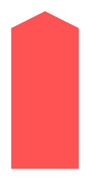
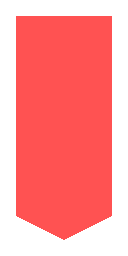

아사쿠사선 아사쿠사선 |
 미타선 미타선 |
 신주쿠선 신주쿠선 |
 오에도선 오에도선 |
| 도움말 | |
|
위에 있는 노선 아이콘이나 이름을 누르면 해당 노선의 실시간 운행 정보를 확인할 수 있어요. 열차 위치가 자동으로 새로고침되지는 않아요. 열차 운행 정보는 일본 대중교통 오픈 데이터 센터에서 제공하는 Open API를 통해 받아오고, 네이버에서 제공하는 나눔글꼴을 사용하고 있어요. |
|
| 범 례 | |
 |
보통 열차 |
|   | 쾌속, 특급, 급행 열차 등 |